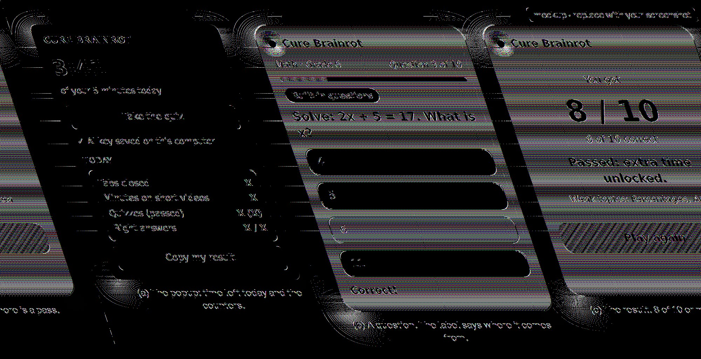
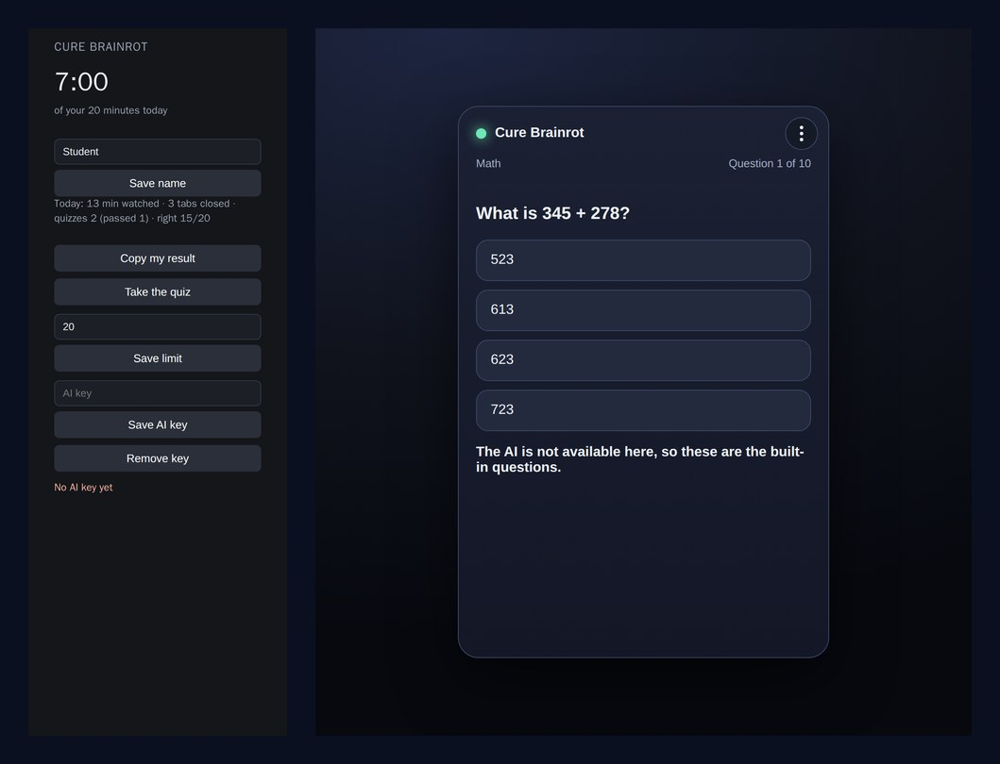

FRP 2026 · AI Engineering · ISSAI, Nazarbayev University
Cure Brainrot
A Chrome extension that closes TikTok, YouTube Shorts and Instagram Reels after a daily limit, and opens a short school quiz on your own subjects instead. 8 of 10 right answers give 20 more minutes.

The problem
Short videos eat hours without anyone noticing. My classmates and I open TikTok, YouTube Shorts or Instagram Reels "for five minutes" and lose an evening; after that it is harder to start homework or go to sleep. It is not only about time: after a long scroll the brain is tired and little was learned. Screen-time limits only stop the video — they do not give anything back.
How it works
- The first time, the quiz asks your language (English, Russian or Kazakh), your grade (5, 6 or 7) and the subjects you want to study: Math, Science and Social Studies; Language is the fourth subject when there is time.
- The extension counts the time on the three short-video sites. When the daily limit is used up, it closes those tabs.
- A quiz of 10 questions, at your grade and in the chosen language, comes first. The AI writes the questions; without an AI key the built-in questions are used.
- 8 of 10 right answers open 20 more minutes. The wrong topics go on a "to do" list and the next quiz starts with your weakest subject.
What it looks like

Real screens of version 2.6: the popup with the time left and the daily line, and the quiz with one question of 10.
Numbers from the project
| What | Our number |
|---|---|
| Daily limit of short videos (can be changed in the popup) | 20 minutes |
| Questions in one quiz | 10 |
| Right answers needed to pass | 8 of 10 |
| Extra time after a passed quiz | 20 minutes |
| Short-video sites the extension closes | 3 |
| Languages on the screen | 3 |
| Grades of the questions | 5, 6, 7 |
Install (2 minutes)
- Download cure-brainrot-2.6.zip and unzip it — you get a folder
cure-brainrot-2.6. - Open
chrome://extensionsin Chrome. - Turn on Developer mode (top right).
- Click Load unpacked and choose the unzipped folder.
- Click the puzzle piece → Cure Brainrot; set your name and your daily limit.
Works in Chrome and other Chromium browsers such as Edge.
The AI key is optional
Without a key you get built-in school questions, so the quiz always works. With your own key the questions are written by the AI in the subjects you picked. The key is saved only on your computer, and the daily line you copy never leaves it.